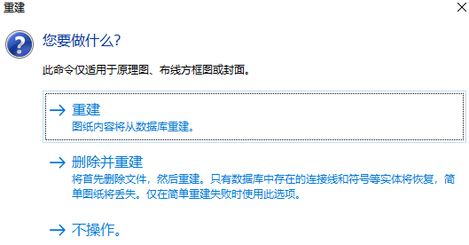
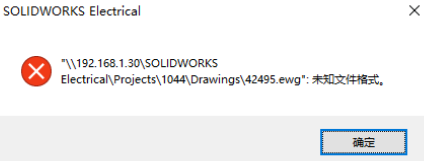

Electrical重建问题和方法
重建
未知文件格式
SOLIDWORKS® Electrical 项目中的图解已损坏，当我尝试打开它时，软件崩溃。 我尝试“重建”图解，但没有成功。 我应如何修复图解？
执行以下步骤以恢复文件信息，该信息存储在项目的 SQL 数据库中。
检查已损坏略图的属性以获取“ewg”文件编号。
打开 Windows 资源管理器，然后找到文件。 首先，请在“C:\ProgramData\SOLIDWORKS Electrical\Projects\ <项目 id> \Drawings”文件夹中查找。 如果文件未在该文件夹中，请使用 Windows 资源管理器搜索功能进行查找。
将“ewg”文件的文件扩展名更改为“dwg”，然后删除“bak”文件。
在 SOLIDWORKS® Electrical 项目中，转到“输入/输出”选项卡，然后单击“导入 DWG 文件”。
选择已转换的“dwg”文件，然后完成输入过程。